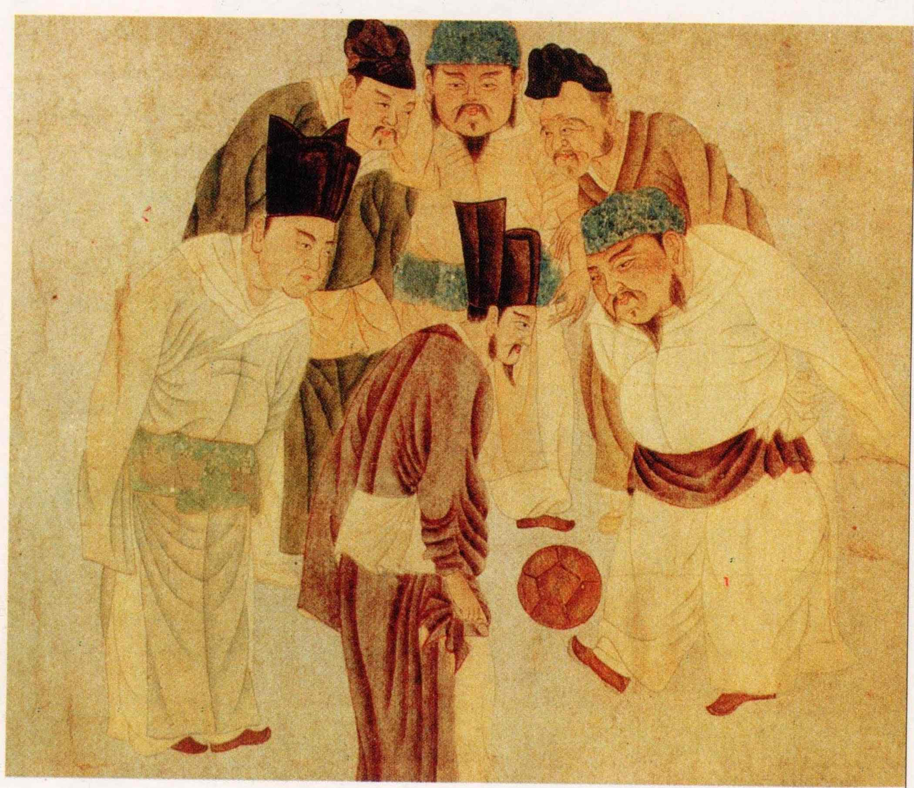
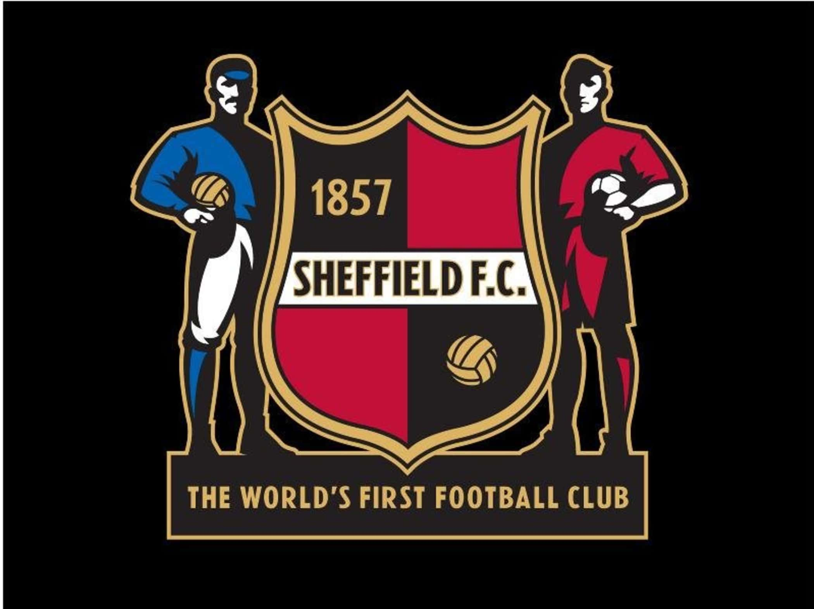

Futbol İle İlgili Her Şey
FUTBOL DÜNYASINA HOŞGELDİNİZ
21. asır itibariyle 250’nin üstünde ülkede 250 milyon oyuncuyu aşkın kişi tarafından oynanmakta olan, dünyadaki en yaygın ve en popüler spordur. Kökeni İngilizce olan ve ayak topu manasına gelen “football” kelimesinden gelmektedir.
İki takım arasında ve iki takımın 11 er kişilik oyuncu kadrosuyla oynanır. Her takımda 5 tane de yedek oyuncu vardır. 100 ila 110 m uzunluğunda, 65 ila 75 m genişliğinde toprak veya çim bir saha alanında oynanır. Takımların hedefi; topu rakip takımın kalesinden içeri atarak gol olmasını sağlamaktır. Kaleler; 732x244cm ölçüsündedir. Oyun 45 er dakikalık iki zaman dilimi içersinde oynanır. Devre arasında futbolcular 15 dakika mola verir. Oyun esnasında futbolcuların topa el ile müdahale etmesi yasak olup yalnızca her iki takımın kalesini koruyan kaleciler, kendileri için belirlenmiş ceza alanı dahilinde topa elle müdahale edebilirler.
İnsanoğlunun “top” ile oynamaya başlamasının tarihi çok eskilere dayanıyor. Mısır’da mezarlardaki duvar resimlerinde ayakla top oynayan insan figürlerine rastlanmıştır. Hatta bu zamandan kalma, 7.5 cm çapında deri veya ketenden yapılmış toplar 2500 yıl önceden günümüze kadar ulaşmıştır ve kimi müzelerde sergilenmektedir. Homeros da “Odiesa”da top oyunlarından bahseder. M.Ö 2500 yıllarında da Çin’de yere dikilmiş iki mızrak arasından bir topu tekmelemek suretiyle geçirmeye çalışarak talim yapıldığı bilinmektedir.
Futbol tarih boyunca hemen hemen bütün medeniyetlerde benzer biçimlerde boy gösterdikten sonra bugünkü haline en yakin şeklini 17. yüzyılda İngiltere’de almıştır.1848'de Cambridge Üniversitesi'nde oluşturulan Cambridge kuralları, futbolun ilk yazılı kaideleri olarak tarihe geçmişti. Bunlar çok kabul görmemiş, okullardan bağımsız olarak kulüpler yavaş yavaş kurulmaya başlamıştı.
24 Ekim 1857 günüydü. İngiltere'nin Sheffield kentinde iki kafadar bir kulüp kuruyordu. Genel sekreterlik ve kaptanlık görevi Nathaniel Crestwick'in olurken, William Prest asbaşkanlık koltuğuna oturuyordu. Çok geçmeden kırmızı-siyahlılar kendi oyunlarını oynamaya başlıyordu. Kurallarını koyuyorlar, bir oyununun abecesini yazıyorlardı. Sheffield FC'nin kapısında dünyanın en eski futbol takımı yazıyor. Hem FIFA, hem de İngiltere Futbol Federasyonu bu minik ekibi ilk olarak kabul ediyor; her 24 Ekim'de onlar konuşuluyor. En azından senede bir gün!
İlk maç: Sheffielf FC - Hallam (26 Aralık 1860) 1857'de kurulan Sheffield F.C. üç yıl kadar yalnızları oynamış, 4 Eylül 1860'da Hallam'ın dünyaya gözlerini açmasıyla ansızın bir rakibe kavuşmuştu. İşte aynı yılın 26 Aralık gününde tarihin ilk futbol müsabakası yapılmış, o gün gülen 2-0'lık skorla Sheffied olmuştu. Ne de olsa onlar daha eskiydi; tecrübelerini konuşturmuşlardı.
Bugün her iki kulüp de alt liglerde mücadele ediyor. Evet, bugün zerre kadarlar ancak onların attığı minicik adımın artık nerelere vardığı aşikâr. Futbol tarihi için milat olarak kabul edilebilecek o günden mağrur tabelalar, kitaplar, bir de Sandygate yadigâr. O stadyumun kapasitesi sadece yedi yüz olsa da, ondan eskisi yok; haliyle futbola gönül vermişler bağlamında değeri hesaplanamayacak kadar çok!
İlk milli maç: İngiltere - İskoçya (30 Kasım 1872) Milyarları peşinden sürükleyen oyunun abecesinin yazıldığı Ada'da ilk milli maç da yapılmıştı. 1870'ten 1872'ye kadar İngiltere ile İskoçya beş kere buluşsa da bu karşılaşmalar daha çok gösteri mahiyetindeydi. Londra'daki “eksik etekliler”den oluşan İskoç takımında bu işin erbabları pek sahne almamıştı.
Federasyon Kupası'nın da fikir babası olan Federasyon Genel Sekreteri Charles William Alcock eleştirilerden yılmıyordu. Yazışma trafiğinin sonunda Glasgow için randevulaşılıyordu. Viski diyarının en iyi takımı Queen's Park'tan toplanan futbolcular, İngiliz meslektaşlarıyla kozlarını paylaşacaktı.
Dört bin taraftar 1 shilling ödeyerek tribünlerdeki yerini almış, sis santrayı 20 dakika geciktirmişti. İskoçlar geleneksel koyu mavi formalarıyla sahada yerini alırken, İngilizler bembeyazdı. Mücadele başladığı gibi biterken, İskoçların bir golü iptal edilmişti.
30 Kasım 1872'de Hamilton Crescent'ta oynanan bu karşılaşma, futbol tarihinin ilk resmî milli maçı olarak kabul ediliyor. O günün illüstrasyonları, romantikleri mest ediyor.
İlk Dünya Kupası: Uruguay 1930 İlk Avrupa Futbol Şampiyonası, Dünya Kupası'ndan 30 yıl sonra düzenlense de fikri aslında daha önce ortaya atılmıştı. 1927'de Fransız Futbol Federasyonu Başkanı Henri Delaunay, Güney Amerika'dan esinleniyor, 'Yaşlı Kıta'nın da kendisine ait bir turnuvası olması gerektiğini savunuyordu. O tarihte daha UEFA kurulmamış; Dünya Kupası'nın temeli atılmamıştı.
FIFA teklifi elinin tersiyle iterken, kendi organizasyonunun peşine düşüyordu. Başkan Jules Rimet, henüz emekleme dönemindeki oyunu Olimpiyatlarla sınırlamanın anlamsız olduğuna inanıyordu.
28 Mayıs 1928'deki FIFA Kongresi'nde ilk Dünya Kupası'nın 1930'da düzenlenmesine karar veriliyor, son iki Olimpiyat'ta altın madalya kazanan Uruguay'a ilk turnuvayı düzenleme onuru bahşediliyordu. Güney Amerika'nın sevimli ülkesi kendi topraklarında taçlanarak da tarihe geçmişti.
İlk Avrupa Futbol Şampiyonası: Fransa 1960 1954'te UEFA'nın kurulmasından sonra Danimarkalı Ebbe Schwartz başkanlık koltuğuna otururken, Delaunay genel sekreter olmuştu. Fransız futbol adamı Avrupa'daki federasyonların bir araya gelmesinden mutlu olsa da bu birlikteliğin sportif olarak da taçlanması gerektiğine inanıyordu
Ona göre nasıl Güney Amerika Futbol Konfederasyonu'nun Güney Amerika Şampiyonası, FIFA'nın da Dünya Kupası varsa, Yaşlı Kıta'nın da kendisine ait bir organizasyonu olmalıydı. 20 Eylül 1955'te yazdığı makalede ayrıca Şampiyon Kulüpler Kupası'nın önemini vurgulayan ilk UEFA Genel Sekreteri, 50 gün sonra vefat etmişti.
Hem UEFA, hem de Fransız Futbol Federasyonu'nda bayrağı devralan oğlu Pierre, hayatı boyunca Rimet'nin gölgesinde kalan babasının düşünü gerçekleştirmeyi başarmıştı. 1960'daki ilk turnuva Fransa'da düzenlenmiş, Sovyetler Birliği zafere ulaşmıştı.
İlk Ballon d'Or: 1956 Hanot sadece Şampiyon Kulüpler Kupası'nın fikir babası değildi. Ona göre Avrupa'nın en iyi futbolcusunun da belirlenmesi gerekiyordu. France Football dergisinin yıllarca verdiği Ballon d'Or, ilk 1956'da Sir Stanley Matthews'a bahşedilmişti. 1995'e kadar “Yaşlı Kıta”da boy gösteren en iyi Avrupalı futbolcuya giden ödül, o tarihten sonra Avrupa'da top oynayan yabancılara da verilmeye başlanmıştı. 2007'den bu yana yeryüzünün en iyisi seçiliyor. O yıl taçlanan Kaka'dan bu yana ödülü Cristiano Ronaldo ile Lionel Messi paylaşıyor.